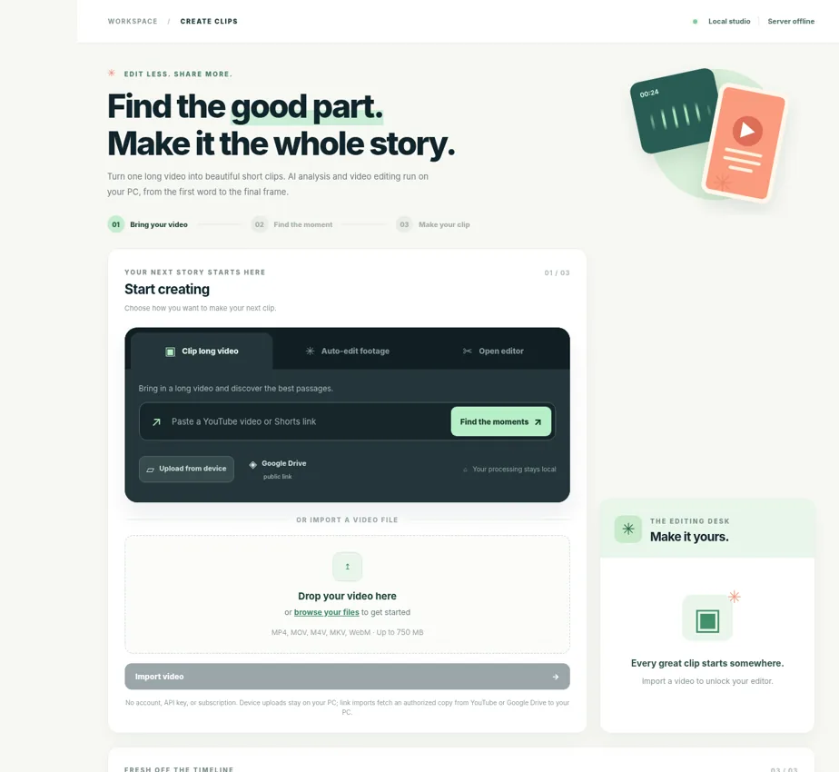

Bring your video
Import a file from your computer or an accessible link where downloading is permitted. Keep source videos in your local project folder.
Turn long recordings into short, captioned videos. Find promising moments, refine the edit, and prepare clips for YouTube, Facebook, and other connected platforms—all from your own computer.
Free local software • No paid AI API required • Windows, macOS and Linux setup instructions

Cutloom keeps the essential editing tools together. Suggestions are based on transcript features—they are editorial aids, not predictions of views.
Import a file from your computer or an accessible link where downloading is permitted. Keep source videos in your local project folder.
Transcribe locally with whisper.cpp and review suggested clips. Adjust the in and out points whenever you like.
Reframe, style captions, preview, and export a video for Shorts, Reels, or landscape viewing.
Choose a quality preset and render locally using FFmpeg. Output quality depends on source resolution and your hardware.
Connect eligible accounts for authorized uploads and manage platform-specific publishing status. Some platforms require review or manual posting.
Delete stored projects and exported media from the local app. No website account, credit card or paid AI service is required.
Open Cutloom on your PC, add the video and run the local speech-recognition engine—or edit without transcription.
Choose a suggested highlight or any manual time range. Adjust the composition and captions before exporting.
Download the MP4. Use an authorized connection where supported, or post through the platform’s official studio.
No. This website explains Cutloom; the Python video editor runs on your own computer. GitHub Pages does not run the FFmpeg backend.
There are no required paid AI APIs. It uses free software, but your own internet, processing power and storage are still involved.
Editing and speech recognition can run locally after setup. Video imports, software downloads, sign-in and social publishing require internet access.
No. Publishing support differs by platform, account permissions and developer approval. TikTok draft transfer, for example, requires separate authorization.
Cutloom is intended for footage you own or have permission to edit and publish. Learn more about your responsibilities in our Terms of Service and how local data is handled in our Privacy Policy.